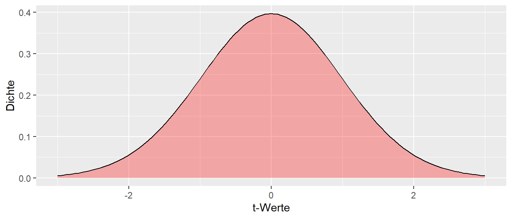
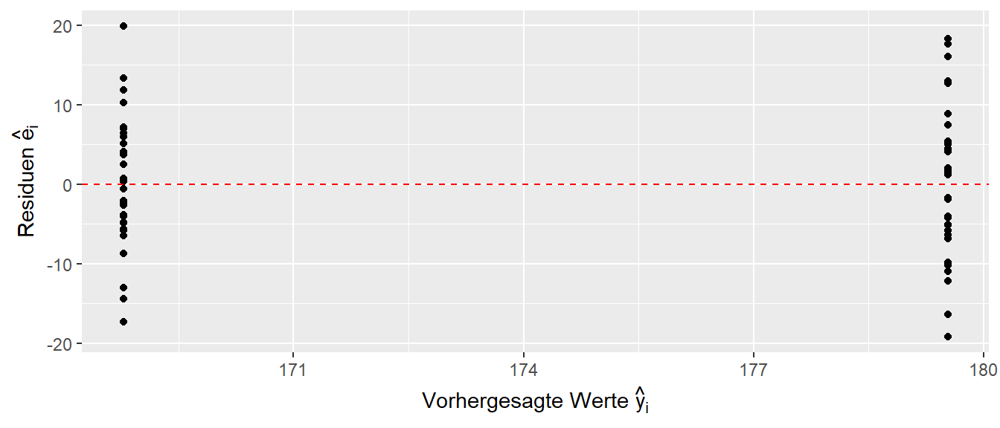
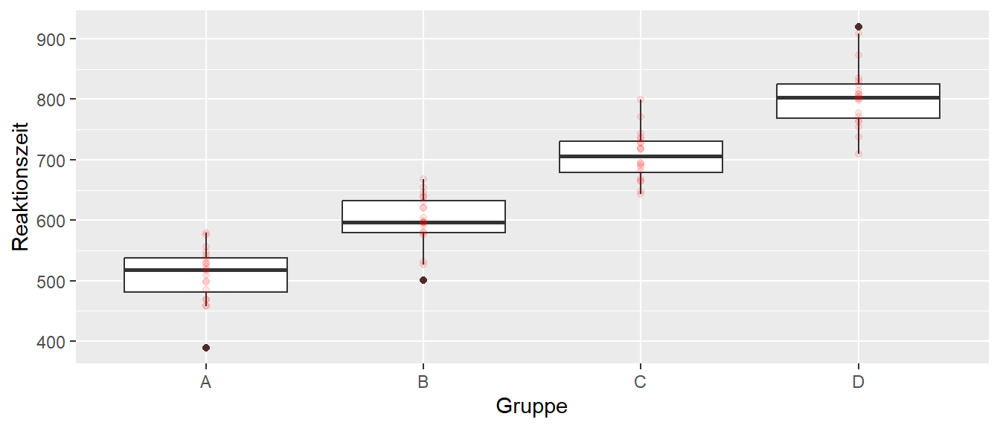
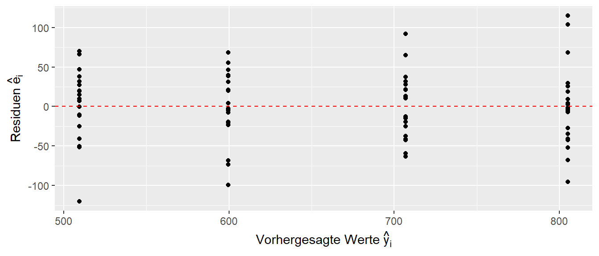
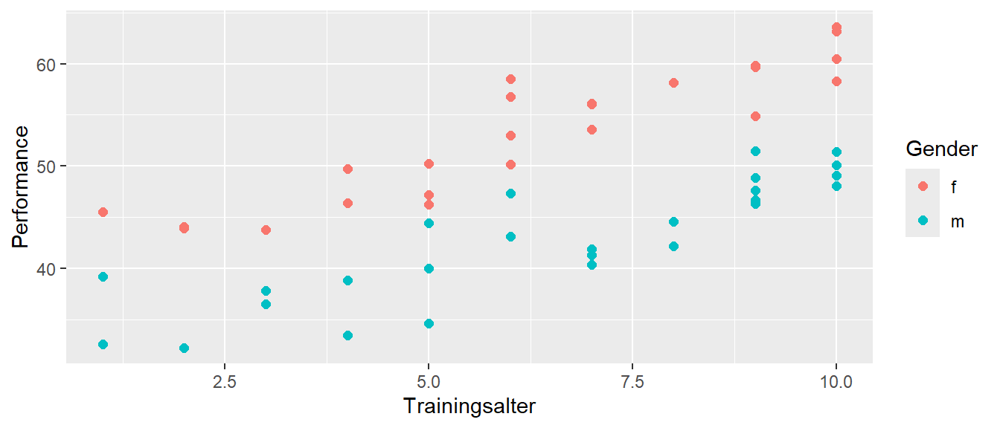
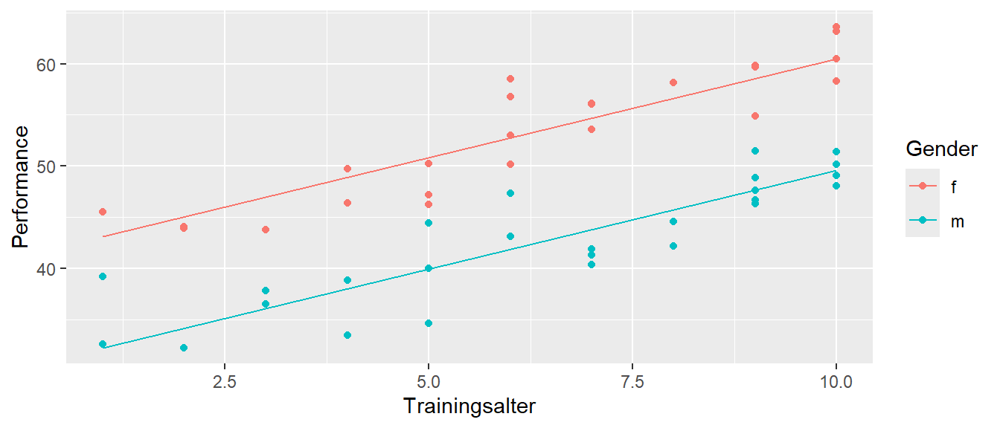
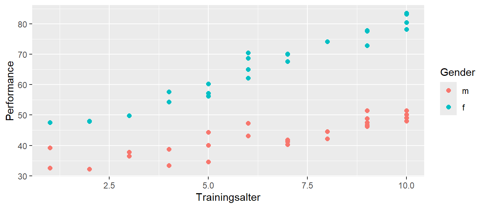
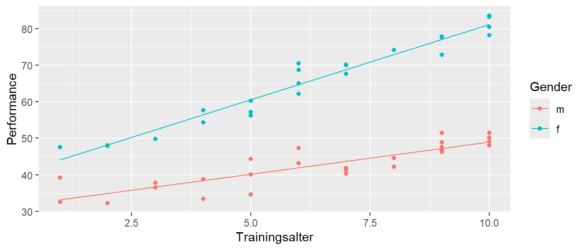
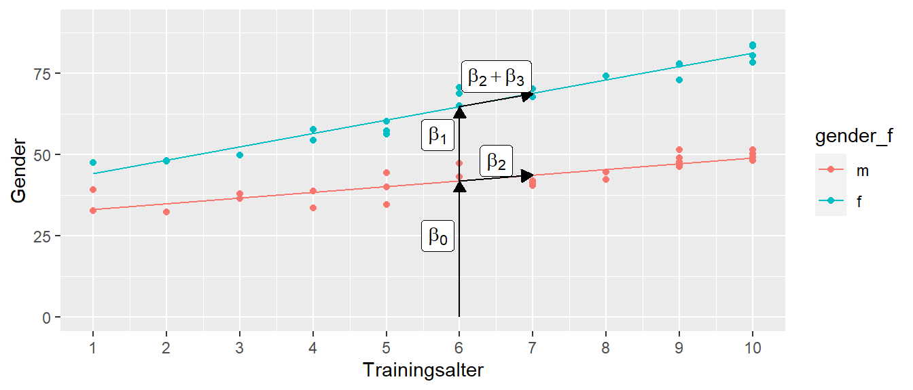

19 Integration von nominalen Variablen
Bisher haben wir nur kontinuierliche, beziehungsweise metrische Variablen in unsere linearen Modelle aufgenommen. Im Folgenden werden wir sehen, dass wir mit einem kleinem Trick genauso nominale Variablen, also z.B. TREATMENT versus CONTROL, in das Modell integrieren können, ohne dass wir dafür etwas fundamental neues lernen müssen.
19.1 Vergleich von zwei Gruppen
Beginnen wir mit einem einfachen Beispiel. Wir wollen die Unterschiede zwischen Männern und Frauen in Bezug auf die Körpergröße untersuchen statistisch untersuchen. In Abbildung 19.1 ist ein hypothetischer Datensatz von Körpergrößen von Frauen und Männern abgebildet. Wenig überraschend, da der Datensatz so erstellt wurde, sind Männer im Mittel größer als Frauen.
In Tabelle 19.1 ist ein Ausschnit der Daten tabellarisch dargestellt. Wir haben zwei Datenspalten. In der ersten Spalte stehen die Körpergrößen, während in der zweiten Spalte die nominale Variable gender steht die entweder den Wert \(m\) für Männer oder \(f\) für Frauen annimmt.
| cm | gender |
|---|---|
| 174.4 | m |
| 177.7 | m |
| 195.6 | m |
| 171.3 | f |
| 164.0 | f |
| 176.0 | f |
In Tabelle 19.2 sind dann auch noch einmal die deskriptiven Statistiken der Körpergrößendaten abgebildet die auch noch einmal den Eindruck aus Abbildung 19.1 bestätigen.
| Gender | \(\bar{x}\) | SD |
|---|---|---|
| f | 168.8 | 8.4 |
| m | 179.5 | 9.8 |
Wir müssen zunächst einmal eine kurze Detour nehmen und uns einmal genauer anschauen wie nominale Werte in R repräsentiert werden.
19.2 Nominale Variablen in R (detour)
Nominale Variablen werden in R mittels eines eigenem Datentyps factor repräsentiert. Erstellt werden kann ein Faktor mit der factor()-Funktion. Die Funktion hat drei wichtige Parameter. Der erste Parameter bezeichnet die Werte, der zweite die möglichen Faktorstufen (levels) und der dritte Parameter die dazugehörigen Bezeichnungen (labels). Ein einfaches Beispiel sieht dann so aus:
gender <- factor(c(0,0,1,1),
levels = c(0,1),
labels = c('m','f'))
gender[1] m m f f
Levels: m fD.h. wir haben einen Datenvektor mit den Elemente \((0,0,1,1)\). Wir spezifizieren die levels dementsprechend mit \(0\) und \(1\) und definieren die dazugehörigen labels mit \(m\) und \(f\). Dabei sind jeweils Vektoren übergeben worden (siehe c()). Wenn wir die neue Variable gender aufrufen erhalten wir den Datenvektor mit den entsprechenden labels. Zusätzlich gibt R die möglichen labels auch noch einmal explizit als Levels an.
Wenn wir den Parameter levels nicht angegeben hätten, dann extrahiert factor() die eineindeutigen Werte selbst und führt die Abbidlung auf die labels entsprechend der standard Sortierungsregeln von R aus.
gender <- factor(c(0,0,1,1),
labels = c('m','f'))
gender[1] m m f f
Levels: m fstr(gender) Factor w/ 2 levels "m","f": 1 1 2 2Dabei muss darauf geachtet werden, dass die Abbildung auch tatsächlich diejenige ist, die gewünscht ist.
gender <- factor(c(0,0,1,1),
labels = c('f','m'))
gender[1] f f m m
Levels: f mDaher ist es fast immer sinnvoll labels und levels immer zusammen zu spezifizieren. Wenn die Parameter nicht angegeben werden, dann führt factor die Abbildung automatisch durch und für die labels werden die Datenwerte übernommen.
gender <- factor(c(0,0,1,1))
gender[1] 0 0 1 1
Levels: 0 1
Warnung
Achtung, die Variable gender sieht zwar aus wie ein numerischer Vektor, sie ist es aber nicht.
is.numeric(gender)[1] FALSEgender + 1[1] NA NA NA NAIntern wird eine Faktorvariable von R zwar als ein numerischer Vektor abgelegt. Aber die “sichtbaren” Werte sind nun die Zeichenketten der labels, die daher auch angezeigt werden. Die interne numerische Repräsentation muss auch nicht mehr den ursprünglichen Datenwerten entsprechen.
as.numeric(gender)[1] 1 1 2 2Die Datenwerte waren ursprünglich \((0,1)\) und sind jetzt auf \((1,2)\) abgebildet worden. Erinnert euch an die Eigenschaft von nominalen Variablen. Nominale Variablen sind einfach voneinander unterscheidbare Werte die jedoch in keiner Ordnung stehen.
Die automatische Konvertierung von factor() funktioniert am intuitivsten mit Zeichenkettenvektoren.
gender <- factor(c('m','f','m','f'))
gender[1] m f m f
Levels: f mstr(gender) Factor w/ 2 levels "f","m": 2 1 2 1factor() ermittelt zunächst die eineindeutigen Werte und sortiert diese dann entsprechend des Typen. In diesem Fall wird die Zeichenkette alphabetisch sortiert. Dann erfolgt die Abbildung der Werte auf die labels. Dies führt in diesem Fall dazu, dass die Werte m intern den Wert \(2\) zugeordnet bekommen, obwohl der erste Wert in den Daten m ist. Diese Sortierung der Daten wird später noch einmal von Bedeutung werden.
Die Reihenfolge der Faktorstufen wird durch die Angabe des levels explizit bestimmt werden und ist daher auch noch mal ein Argument dafür das levels-Argument zu verwenden.
gender <- factor(c('m','f','m','f'),
levels = c('m','f'))
gender[1] m f m f
Levels: m fstr(gender) Factor w/ 2 levels "m","f": 1 2 1 2gender <- factor(c('m','f','m','f'),
levels = c('f','m'))
gender[1] m f m f
Levels: f mstr(gender) Factor w/ 2 levels "f","m": 2 1 2 1
Tipp
Im package forcats sind eine Reihe von Funktionen hinterlegt, mit denen die Eigenschaften von factor-Variablen einfach manipuliert werden können. Zum Beispiel, wenn die Reihenfolge von Faktorstufen geändert werden soll kann die Funktion fct_relevel() verwendet.
[1] m f m f
Levels: f m[1] m f m f
Levels: m fSchaut euch die ausführliche Dokumentation der Funktionen und die Beispiel an, wenn ihr auf Probleme mit factor-Variablen stoßt.
Tipp
Viele Funktionen in R, wie z.B. lm(), transformieren Vektoren mit Zeichenketten automatisch in einen factor() um. Wird in lm() in der Formel beispielsweise y ~ gender benutzt und gender ist eine Datenspalte die aus den Zeichenketten c('m','m','f','f') besteht, dann ruft lm() intern die Funktion factor() für diese Daten auf und führt dann die Berechnung mit dem Faktor durch.
Dies erleichtert natürlich oft den Umgang mit den Daten, hat aber den Nachteil das einem immer klar sein muss, dass die automatische Konvertierung auch tatsächlich diejenige ist, dich auch gewünscht ist.
19.3 Vergleich von zwei Gruppen (continued)
Kommen wir zurück zum Körpergrößenvergleich. Normalerweise würden wir die Unterschiede zwischen den beiden Gruppen mit einem klassischen t-Test für unabhängige Stichproben unter der Annahme der Varianzgleichheit untersuchen. In R können wird dies mit der t.test()-Funktion durchführen.
t.test(cm ~ gender, data=height, var.equal=T)
Two Sample t-test
data: cm by gender
t = -4.5683, df = 58, p-value = 2.617e-05
alternative hypothesis: true difference in means between group f and group m is not equal to 0
95 percent confidence interval:
-15.45403 -6.03713
sample estimates:
mean in group f mean in group m
168.7834 179.5290 Dem Output von `t.test() ist ein statistisch signifikantes Ergebnis zu entnehmen.
Erinnern wir uns noch einmal an die Modellformulierung beim t-Test bei gleich großen Gruppen \((n_w = n_m)\).
\[\begin{equation} \begin{aligned} Y_{if} &= \mu_{f} + \epsilon_{if}, \quad \epsilon_{if} \sim \mathcal{N}(0,\sigma^2) \\ Y_{im} &= \mu_{m} + \epsilon_{im}, \quad \epsilon_{im} \sim \mathcal{N}(0,\sigma^2) \end{aligned} \label{eq-mlm-dummy-tTest-model} \end{equation}\]
Beide Gruppen sollten normalverteilt sein mit gleicher Varianz \(\sigma^2\) und den Erwartungswerten \(\mu_f\) für die weiblichen Teilnehmerinnen und \(\mu_m\) für die männlichen Teilnehmer. Die Hypothesen beim t-Test sind unter der Nullhypothese die übliche Annahme der Gleichheit der Mittelwerte bzw. unter der Alternativhypothese die Ungleichheit der Mittelwerte.
\[\begin{align*} H_0&: \delta = 0 \\ H_1&: \delta \neq 0 \end{align*}\]
Daraus resultiert die folgende Teststatistik:
\[\begin{equation} t = \frac{\bar{y}_m - \bar{y}_w}{\sqrt{\frac{s_m^2 + s_w^2}{2}}\sqrt{\frac{2}{n}}} \label{eq-tTest} \end{equation}\]
Unter der \(H_0\) folgt die Referenz- bzw. Stichprobenverteilung einer t-Verteilung mit \(N - 2\) Freiheitsgraden.
\[\begin{equation*} t \sim t_{df=2n-2} \end{equation*}\]
Die entsprechende Dichtefunktion hat die folgende graphische Darstellung (siehe Abbildung 19.2).

Soweit nicht Neues. Im Beispiel haben wir einen \(t\)-Wert von \(t = -4.6\) beobachtet der derart extrem ist, dass wir ihn in Abbildung 19.2 schon gar nicht mehr unterbringen können.
Da wir aber faul sind und uns nicht verschiedene Tests merken wollen schauen wir uns jetzt an, wie Wir auf das gleiche Ergebnis mittels eines linearen Modellansatzes kommen können. Die Frage ist daher nun:
19.4 Kann ich aus dem t-Test ein lineares Modell machen?
Unser altbekanntes lineares Modell hat im einfachsten Fall die folgende Form für eine einfache Regression:
\[\begin{equation} y_i = \beta_0 + \beta_1 \cdot x_i + \epsilon_i \label{eq-mlm-dummy-lm} \end{equation}\]
Können wir diese Modell irgendwie auf die Formeln \(\eqref{eq-mlm-dummy-tTest-model}\) und \(\eqref{eq-tTest}\) abbilden?
Tatsächlich gibt es eine relativ einfache Möglichkeit mittels eines Ansatzes mit sogenannten Dummy- oder auch Indikatorvariablen. Die \(Y\)-Variable, die abhängige Variable ist die gleiche wie im t-Test. Im Beispiel also die Körpergrößen. Daher bleibt für die \(X\)-Variable nur noch die unabhängige Variable, in unserem Beispiel die gender-Variable. Jetzt haben wir aber das Problem, dass \(x_i\) nur zwei verschiedene Werte annehmen kann und diese auch noch entweder m oder f im Beispiel sind. Offensichtlich macht die folgende Formulierung wenig Sinn:
\[\begin{equation*} y_i = \beta_0 + \beta_1 \cdot m + \epsilon_i \end{equation*}\]
Wir machen aus \(x_i\) ein Indikatorvariable. Eine Indikatorvariable kann nur zwei verschiedene numerische Werte einnehmen. Entweder den Wert \(0\) oder den Wert \(1\) (es gibt auch andere Schemata, aber die Ignoriren wir mal). Jetzt macht die Formel wieder mehr Sinn.
\[\begin{align*} y_i &= \beta_0 + \beta_1 \cdot 0 + \epsilon_i \quad \text{oder} \\ y_i &= \beta_0 + \beta_1 \cdot 1 + \epsilon_i \quad \end{align*}\]
Wir brauchen jetzt nur noch eine Abbildung von unseren Werten m und f auf die Werte \(0\) und \(1\) um die Gruppenzugehörigkeit zu kodieren. Dazu legen wir eine sogenannte Referenzgruppe fest die denn Wert \(x_i = 0\) zugewiesen bekommt. Im Beispiel sei die weibliche Gruppe die Referenzgruppe. Dies führt zu der folgenden Vorschrift: Wenn ein Wert \(y_i\) aus der Gruppe weiblich (f) kommt, dann wird \(x_i = 0\) gesetzt, während wenn ein Wert \(y_i\) aus der Gruppe männlich (m) kommt, dann wird \(x_i = 1\) gesetzt.
\[\begin{equation*} x_i = \begin{cases} 0\text{ wenn weiblich}\\ 1\text{ wenn männlich} \end{cases} \end{equation*}\]
So weit so gut. Jetzt können wir uns mit den Koeffizienten \(\beta_0\) und \(\beta_1\) in Formel \(\eqref{eq-mlm-dummy-lm}\) beschäftigen und deren Bedeutung unter dem Indikatorvariablenansatz verstehen. In der weiblichen Gruppe mit \(x_i = 0\) folgt für \(\eqref{eq-mlm-dummy-lm}\):
\[\begin{equation*} y_i = \beta_0 + \beta_1 x_i + \epsilon_i = \beta_0 + \epsilon \end{equation*}\]
D.h. der \(y\)-Achsenabschnitt \(\beta_0\) wird zum Mittelwert der Referenzgruppe, im Beispiel der f. Die Formulierung ist genau die gleich wie diejenige die wir im t-Test-Ansatz verwendet haben (siehe \(\eqref{eq-mlm-dummy-tTest-model}\)). Formal also
\[\begin{equation*} \beta_0 = \mu_f \end{equation*}\]
Schauen wir uns \(\beta_1\) nun an. Wenn ein Datenpunkt aus der Gruppe m kommt dann wird \(x_i = 1\) gesetzt. Formal:
\[\begin{equation*} y_i = \beta_0 + \beta_1 x_i + \epsilon_i = \beta_0 + \beta_1 + \epsilon \end{equation*}\]
Das sieht jetzt etwas unverständlich aus. Machen wir einfach mal die folgende Festlegung: \(\beta_1 = \mu_m - \mu_f = \Delta\). D.h. wir setzen als \(\beta_1\) der Unterschied zwischen den beiden Gruppenmittelwerten. Setzen wir das mal ein und schauen ob uns das weiter bringt.
\[\begin{align*} y_i &= \beta_0 + \beta_1 \cdot 0 + \epsilon_i = \mu_f + \Delta \cdot 0 + \epsilon_i = \mu_f + \epsilon_i \\ y_i &= \beta_0 + \beta_1 \cdot 1 + \epsilon_i = \mu_f + \Delta \cdot 1 + \epsilon_i = \mu_f + (\mu_m - \mu_f) + \epsilon_i = \mu_m + \epsilon_i \end{align*}\]
D.h. wir sind mittels der Indikatorvariablen in der Lage das Modell des t-Test (Formel \(\eqref{eq-mlm-dummy-tTest-model}\)) in ein lineares Modell eine einfache lineare Regression zu übersetzen.
\[\begin{align*} Y_i &= \mu_f + \Delta_{m} \times x_{i} + \epsilon_i \\ \Delta_m &= \mu_m - \mu_f \\ \end{align*}\]
Eine der Voraussetzungen im t-Test ist die Normalverteilung der Wert. Letztendlich bedeutet dies, dass wenn ich von den \(y_i\)-Werten eine Konstante abziehen, das der Rest auch wieder Normalverteilt ist. Der Rest ist jetzt nichts anderes als die Residuen, wenn ich von den \(y\)-Werten die jeweiligen Gruppenmittelwerte abziehe.
\[\begin{align*} e_{if} &= y_{if} - \mu_f \\ e_{im} &= y_{im} - \mu_m \end{align*}\]
D.h. somit, dass die Residuen \(e_i\) Normalverteilt. Das ist aber auch eine der Voraussetzungen für die Inferenz im linearen Modell. Im linearen Modell wird weiterhin Homoskedasitzität voraussgetzt, was nichts anderes als die Varianzgleichheit im t-Test ist.
Um den Ansatz einmal konkret zu machen, können wir zum Beispiel den ersten Wert aus Tabelle 19.1 \(y_{1m} = 174.4\) in seine Komponenten aufteilen. Wir erhalten \(\Delta = 179.53 - 168.78 = 10.75, e_{1m} = 174.4 - 179.53= -5.13\) und \(x_{1m} = 1\).
\[\begin{align*} y_{1m} = 174.4 &= \mu_f + \Delta \cdot x_{1m} + e_{1m} \\ &= 168.78 + 10.74 \cdot 1 - 5.13 \end{align*}\]
Das Gleiche für den ersten weiblichen Wert in Tabelle 19.1 \(y_{1f} = 171.3, \Delta = 10.75, e_{1f} = 171.3 - 168.78 = 2.52\) und \(x_{1f} = 0\).
\[\begin{align*} y_{1f} = 171.3 &= \mu_f + \Delta \cdot x_{1f} + e_{1f} \\ &= 168.78 + 10.74 \cdot 0 + 2.52 \end{align*}\]
Zusammenfassend, haben wir mit der Indikatorvariable und dem \(\Delta\) zwischen den Mittelwerten der beiden Gruppen eine Möglichkeit gefunden das t-Test Modell auf das lineare Modell abzubilden. Und tatsächlich, wenn das Modell in lm() eingeben:
mod <- lm(cm ~ gender, height)| \(\hat{\beta}\) | \(s_e\) | t | p | |
|---|---|---|---|---|
| (Intercept) | 168.783 | 1.663 | 101.477 | <0.001 |
| genderm | 10.746 | 2.352 | 4.568 | <0.001 |
Dann sehen wir, dass wir genau diese Werte auch herausbekommen. lm() gibt die Faktorstufe nach dem Namen der Faktorvariable an. Im Beispiel steht genderm für Stufe m aus dem Faktor gender. Wenn wir uns die Werte für den t-Wert für \(\beta_1 = \Delta\) anschauen, dann sehen wir, dass der Wert exakt mit demjenigen übereinstimmt, den wir mittels des t-Test berechnet haben. Lediglich das Vorzeichen ist in der anderen Richtung was aber nur damit zusammenhängt welcher Gruppenmittelwert von dem anderen Gruppenmittelwert subtrahiert werden. Schauen wir uns das Konfidenzintervall für den Steigungskoeffizienten \(\beta_1\) an:
confint(mod) 2.5 % 97.5 %
(Intercept) 165.45401 172.11276
genderm 6.03713 15.45403Dann sehen wir, dass auch das Konfidenzintervall exakt demjenigen des t-Test, bis auf das Vorzeichen, entspricht. D.h. nochmal wir können einen t-Test als ein lineares Modell verstehen und anders herum wir können nun ohne Probleme nominale Variablen in ein lineares Modell mit aufnehmen.
Damit haben wir auch schon eine sehr gute Idee wie ‘lm()’ intern gemacht hat. Bei der Modellevaluierung erkennt lm() gender als nominale Variable und ersetzt es durch die Dummykodierung (siehe Tabelle 19.3).
| cm | gender | \(x_1\) |
|---|---|---|
| 174.40 | m | 1 |
| 177.70 | m | 1 |
| 195.59 | m | 1 |
| 160.05 | f | 0 |
| 164.92 | f | 0 |
| 154.35 | f | 0 |
lm() ersetzt gender durch die Dummy-Variable, also durch Zahlenwerte, und dann kann einfach wieder die uns bekannte Maschinerie des linearen Modell angeworfen werden. Schauen wir uns an, wie ein Residuenplot bei einer Dummyvariablen aussieht (siehe Abbildung 19.3).

Der Plot sieht etwas komisch aus, da die Residuen nur für zwei vorhergesagte Werte \(\hat{y}_i\) angezeigt werden. Kurzes überlegen sollte uns aber davon überzeugen, dass dies korrekt ist, da wir nun noch zwei verschiedene \(y\)-Wert vorhersagen. Nämlich für die Werte \(x_i = 0\) und \(x_i = 1\), eben die Mittelwerte aus den beiden Gruppen.
19.5 Dummyvariablen bei mehr als zwei Faktorstufen
Nachdem wir ein Beispiel mit zwei Faktorstufen durchgegangen sind stellt sich die Frage ob wir auch mehr als zwei Faktorstufen bei einer nominalen Variablen in ein lineares Modell überführen können?
Schauen wir uns dazu wiederum ein einfaches synthetisches Beispiel an (siehe Abbildung 19.4)

Wir haben Daten zu einem Reaktionszeitexperiment bei dem Probanden unter vier verschiedenen Konditionen \(A,B,C\) und \(D\) beobachtet wurden. Die deskriptive Daten sind Tabelle 19.4 einsehbar. Der Einfachheit halber sind die Daten so generiert, dass die Gruppenmittelwert von \(A\) nach \(D\) immer größer werden.
| Gruppe | \(\bar{y}_j\) | \(s_j\) | \(\Delta_{j-A}\) |
|---|---|---|---|
| A | 509.53 | 45.66 | |
| B | 599.68 | 43.57 | 90.15 |
| C | 706.94 | 40.49 | 197.41 |
| D | 805.09 | 52.51 | 295.56 |
Die letzten Spalte zeigt die Abweichungen der Gruppenmittelwerte der Gruppen \(B,C,D\) von der Gruppe \(A\) an. Das sollte jetzt auch schon direkt eine Möglichkeit aufzeigen, wie wir diese Daten in ein lineares Modell überführen. Wir setzen wieder eine Referenzgruppe fest, z.B. Gruppe \(A\) und anstatt ein einzelnes \(Delta\) führen wir drei \(\Delta\)s ein, die jeweils die Abweichungen der Faktorstufen von der Referenzstufe repräsentieren. Für jedes dieser \(\Delta_i\)s führen wir jetzt eine Dummyvariable \(x_{ij}\) ein, mit der wir jeweils über die \(0\) und \(1\) die Zugehörig des \(y_i\) Wertes zu der Gruppe kodieren. Ein lineares Modell lässt nun wie folgt formulieren:
\[ y_i = \mu_A + \Delta_{B-A} x_{1i} + \Delta_{C-A} x_{2i} + \Delta_{D-A} x_{3i} + \epsilon_i \]
Wir haben drei Dummyvariablen \(x_{1i}, x_{2i}\) und \(x_{3i}\) eingeführt und die Modellkoeffizienten bilden jeweils die Abweichungen der Mittelwerte von Gruppe \(A\) ab. Dies führt dann zu der folgenden Kodierung der Daten (siehe Tabelle 19.5).
| x1 | x2 | x3 | |
|---|---|---|---|
| A | 0 | 0 | 0 |
| B | 1 | 0 | 0 |
| C | 0 | 1 | 0 |
| D | 0 | 0 | 1 |
Wenn ein Wert \(y_i\) aus Gruppe \(A\) kommt, dann werden die Dummyvariablen \(x_{1i}, x_{2i}, x_{3i}\) mit den Werten \((0,0,0)\) belegt. Wenn ein Wert \(y_i\) aus Gruppe \(B\) kommt, dann \((1,0,0)\) belegt usw..
Dieser Ansatz lässt sich wie folgt Verallgemeinern (siehe Tabelle 19.6).
| \(x_1\) | \(x_2\) | \(\ldots\) | \(x_{K-1}\) | |
|---|---|---|---|---|
| Referenz (\(j=1\)) | 0 | 0 | 0 | |
| \(j=2\) | 1 | 0 | \(\ldots\) | 0 |
| \(j=3\) | 0 | 1 | \(\ldots\) | 0 |
| \(j=K\) | 0 | 0 | \(\ldots\) | 1 |
Bei Integration einer nominalen Variable mit \(K\) Faktorstufen werden \(K-1\) Dummyvariablen \(x_1, x_2, \ldots, x_{K-1}\) benötigt. Eine der Faktorstufen wird als Referenzstufe definiert. Die Dummyvariablen \(x_1\) bis \(x_{K-1}\) kodieren dann die Abweichungen der anderen Stufen von der Referenzstufe. Diese Art der Kodierung wird in der Literatur auch als treatment Kodierung bezeichnet.
Definition 19.1 (Dummyvariablen ) Eine Dummyvariable, auch Indikatorvariable, ist eine binäre Prädiktorvariable die nur die Werte \(0\) oder \(1\) annimmt in einem linearem Modell einnimmt. Mit einer Dummyvariable kann die An- bzw. Abwesenheit eines kategorialen Effekts modelliert werden.
Das lineare Modell in unserem Reaktionszeitexperiment ergibt den folgenden Modellfit (siehe Tabelle 19.7).
mod <- lm(rt ~ group, data)| \(\hat{\beta}\) | \(s_e\) | t | p | |
|---|---|---|---|---|
| (Intercept) | 509.526 | 10.235 | 49.784 | <0.001 |
| groupB | 90.150 | 14.474 | 6.228 | <0.001 |
| groupC | 197.414 | 14.474 | 13.639 | <0.001 |
| groupD | 295.561 | 14.474 | 20.420 | <0.001 |
Wir erhalten als Steigungskoeffizienten eben genau die Abweichungen der Mittelwerte der jeweiligen Faktorstufen von der Referenzstufe (siehe Tabelle 19.5). D.h. insgesamt haben wir also die Möglichkeit eine nominale Variable mit beliebig vielen Faktorstufen in einem linearen Modell abzubilden. Damit ist dann auch die Unterscheidung in ANOVA und linear Regression als überfällig anzusehen, da beide letztendlich auf dem gleichem Modell, nämlich dem linearen Modell, beruhen.
Schauen wir uns noch den Residuenplot an (siehe Abbildung 19.5).

Hier sehen wir wieder, dass nur vier verschiedene \(\hat{y}_i\) Werte vorhergesagt werden, nämlich die Mittelwerte \(\bar{y}_k\) in den jeweiligen \(K\) Gruppen. Die Residuen \(e_i\) streuen daher nur um diese vorhergesagten Werte.
Wir können die Dummy-Kodierung explizit von R mittels der dummy.coef()-Funktion erhalten.
dummy.coef(mod)Full coefficients are
(Intercept): 509.5262
group: A B C D
0.00000 90.15023 197.41364 295.5606519.6 Kombination von kontinuierlichen und nominalen Prädiktorvariablen
Schauen wir uns nun als weiteren Fall ein Modell an, bei dem beide Typen von Variablen, nominale und kontinuierliche, integriert sind. In Abbildung 19.6 haben wir einen hypothetischen Zusammenhang zwischen der körperlichen Leistung dem Trainingsalter und dem Gender.

Das Trainingsalter geht wie bisher als kontinuierliche Variable in das Modell ein, während wir gender als nominale Variable über eine Dummyvariable modellieren. Weibliche Teilnehmerinnen der Studie legen wir als Referenzstufe fest. Das resultiert in dem folgenden linearen Modell:
\[\begin{align*} Y_i &= \beta_{ta = 0,x_{1i}=0} + \Delta_m \times x_{1i} + \beta_{ta} \times ta + \epsilon_i \\ x_1 &= \begin{cases} 0\text{ wenn weiblich}\\ 1\text{ wenn männlich} \end{cases} \\ \end{align*}\]
Modellieren mit lm() führt dann zu:
mod <- lm(perf ~ gender_f + ta, lew)| term | estimate | std.error | statistic | p.value |
|---|---|---|---|---|
| (Intercept) | 41.181 | 1.083 | 38.024 | 0 |
| gender_fm | -10.877 | 0.805 | -13.503 | 0 |
| ta | 1.927 | 0.145 | 13.261 | 0 |
Die Variable gender ist durch lm() als Dummyvariable definiert worden und der Steigungskoeffizient \(\beta_1=\)gender_fm kodiert den mittleren Unterschied zwischen männlichen und weiblichen Studienteilnehmerinnen. Der \(y\)-Achsenabschnitt kodiert daher die Leistung von weiblichen Teilnehmerinnen mit einem Trainingsalter von ta\(= 0\). (Warum?). Schauen wir uns dazu die resultierenden Graden der vorhergesagten \(\hat{y}_i\) an (siehe Abbildung 19.7).

Wir haben zwei Geraden eine für die weiblichen und eine für die männlichen Teilnehmer mittels des Modells gefittet. Die Geraden sind parallel und um den Wert von \(\beta_1\) gegeneinander verschoben.
Nichts hält uns davon ab auch eine Interaktion zwischen kontinuierlichen und nominalen Variablen zu modellieren. Wenn die Daten zum Beispiel dem Trend in Abbildung 19.8 folgen.

Hier sehen wir, dass die Zunahme der Leistung mit dem Trainingsalter nicht gleich ist in beiden gendern. Bei männlichen Teilnehmern ist der Zuwachs mit dem Trainingsalter größer. D.h der Einfluss der Prädiktorvariable Trainingsalter hängt mit der Ausprägung der Prädiktorvariablen gender zusammen. Es liegt ein Interaktionseffekt vor. Übertragen auf ein lineares Modell könnte der Modellansatz wie folgt aussehen:
\[\begin{equation*} y_i = \beta_{ta=0,x_{1i}=0} + \Delta_m \times x_{1i} + \beta_{ta} \times ta + \beta_{ta \times gender} \times x_{1i} \times ta + \epsilon_i \end{equation*}\]
In lm() ausgedrückt:
mod <- lm(perf ~ gender_f * ta, lew)| term | estimate | std.error | statistic | p.value |
|---|---|---|---|---|
| (Intercept) | 31.354 | 1.370 | 22.891 | 0 |
| gender_ff | 8.575 | 2.010 | 4.266 | 0 |
| ta | 1.763 | 0.195 | 9.043 | 0 |
| gender_ff:ta | 2.362 | 0.290 | 8.139 | 0 |
Die gefitteten Regressionsgeraden nehmen dann die folgende Form an (siehe Abbildung 19.9).

Interpretieren wir noch einmal die Regressionskoeffizienten mit Hilfe des Graphen. Dazu zentrieren wir zunächst einmal die Altersvariable um den Wert \(ta = 6\) und fitten das Modell mittels der zentrierten Variable.
lew <- lew |> mutate(ta_c = ta - ta_cen)
mod_c <- lm(perf ~ gender_f * ta_c, lew)In Tabelle 19.10 sind die neuen Koeffizienten zu sehen. Sie unterscheiden sich nur für \(\beta_0\) und \(\beta_1\) zu den Koeffizienten von Tabelle 19.9 (Warum?).
ta_c) und Gender.
| coef | term | estimate |
|---|---|---|
| \(\beta_0\) | (Intercept) | 41.934 |
| \(\beta_1\) | gender_ff | 22.750 |
| \(\beta_2\) | ta_c | 1.763 |
| \(\beta_3\) | gender_ff:ta_c | 2.362 |
Was bedeuten nun die einzelnen Koeffizienten noch einmal genau? Die Referenzgruppe sind die Datenpunkte der männlichen Gruppe. Daher ist der y-Achsenabschnitt \(\beta_0 = 41.93\) die Performance einer durchschnittlichen, männlichen Versuchsperson mit einem Trainingsalter von ta\(= 6\). Der zweite Koeffizient \(\beta_1 = 22.75\) kodiert hier den Unterschied zwischen einer männlichen und einer weiblichen Versuchsperson jeweils mit einem Trainingsalter von ta\(=6\). Der Steigungskoeffizient \(\beta_2 = 1.76\) dagegen, kodiert den Unterschied zwischen zwei männlichen Versuchspersonen, die sich um ein Trainingsjahr ta voneinander unterscheiden. Der letzte Koeffiziente \(\beta_3 = 2.36\), der Interaktionskoeffizient kodiert nun den Unterschied in den Steigungen zwischen den männlichen und den weiblichen Versuchspersonen. Um den Unterschied zwischen zwei weiblichen Versuchsperson zu erhalten, die sich um ein Trainingsjahr ta voneinander Unterscheiden, müssen daher \(\beta_2\) und \(\beta_3\) miteinander addiert werden \(4.12\).

In Abbildung 19.10 sind die einzelnen Modellkoeffizienten aus Tabelle 19.9 in der Grafik miteingefügt. Die Interpretation der Werte sollte damit klarer werden.
19.7 Zusammenfassung
In diesem Kapitel haben wir gesehen, dass wir ohne Probleme auch nominale Prädiktorvariablen in das lineare Modell integrieren können. Dabei können die Variablen rein additiv oder auch als interaktive Effekte eingehen. Damit haben wir eine extrem flexiblen Prozess um Daten zu modellieren und dabei immer in dem bekannten Punkt-Steigungs-Modell bleiben.
19.8 Herleitung der Identität von t-Test und linearen Modell (advanced)
Seien beide Gruppen gleich groß (\(n\)) mit \(N = n_m + n_w = 2 \times n\). Der t-Wert für \(\beta_1\) berechnet sich aus \(t = \frac{b_1}{s_b}\) mit:
\[ s_b = \sqrt{\frac{\sum_{i=1}^N (y_i - \bar{y})^2}{N-2}\frac{1}{\sum_{i=1}^N(x_i-\bar{x})^2}} \] Dadurch, das die \(x_i\) entweder gleich \(0\) oder \(1\) sind, ist \(\bar{x}=0.5\) und die Abweichungsquadrate im zweiten Term sind alle gleich \(\frac{1}{4}\).
\[ \sum_{i=1}^N(x_i - \bar{x})^2=\sum_{i=1}^N\left(x_i - \frac{1}{2}\right)^2 = \sum_{i=1}^N\frac{1}{4}=\frac{N}{4}=\frac{2n}{4}=\frac{n}{2} \]
Der ersten Term kann mit etwas Algebra und der Definition für die Stichprobenvarianz \(s^2\) auf die gewünschte Form gebracht werden.
\[ \frac{\sum_{i=1}^N(y_i-\hat{y})^2}{N-2}=\frac{\sum_{i=1}^n(\overbrace{y_{im} - \bar{y}_m}^{Männer})^2+\sum_{i=1}^n(\overbrace{y_{iw}-\bar{y}_w}^{Frauen})^2}{2(n-1)}=\frac{(n-1)s_m^2+(n-1)s_w^2}{2(n-1)}=\frac{s_m^2+s_w^2}{2} \]
Die Herleitung für \(\beta_1 = \Delta = \mu_w - \mu_m\) ist ebenfalls relativ geradlinig wenn wir uns an den Zusammenhang zwischen \(\beta_1\) und der Kovarianz zwischen \(x\) und \(y\) erinnern. Mit \(s_x^2 = \frac{N\frac{1}{4}}{N-1} = \frac{N}{4(N-1)}\) folgt:
\[\begin{align*} b_1 &= \frac{cov(x,y)}{s_x^2} \\ &= \frac{\sum_{i=1}^N(y_i - \bar{y})(x_i - \bar{x})}{N-1} \frac{4(N-1)}{N} \\ &= 4\frac{\sum_{i=1}^n(y_{im}-\bar{y})\frac{-1}{2}+\sum(y_{iw}-\bar{y})\frac{1}{2}}{N} \\ &= \frac{4}{2}\frac{\sum_{i=1}^n(y_{iw}-\bar{y}) - \sum_{i=1}^n(y_{im}-\bar{y})}{2n} \\ &= \frac{\sum_{i=1}^n y_{iw}}{n} - \frac{n\bar{y}}{n} - \frac{\sum_{i=1}^n y_{im}}{n} + \frac{n\bar{y}}{n} \\ &= \bar{y}_w - \bar{y}_m = \Delta \end{align*}\]
Zu guter Letzt noch die Herleitung für \(\beta_0 = \mu_m\).
Mit \(b_1 = \Delta = \bar{y}_w - \bar{y}_m\): \[\begin{align*} b_0 &= \bar{y} - \Delta \times \bar{x} \\ &= \frac{\sum_{i=1}^N y_i}{N} - \Delta \times \frac{1}{2} \\ &= \frac{\sum_{i=1}^n y_{im} + \sum_{i=1}^n y_{iw}}{2n} - \frac{1}{2}(\bar{y}_w - \bar{y}_m) \\ &= \frac{1}{2}\frac{\sum_{i=1}^ny_{im}}{n} + \frac{1}{2}\frac{\sum_{i=1}^ny_{iw}}{n} - \frac{1}{2}\bar{y}_w + \frac{1}{2}\bar{y}_m \\ &= \frac{1}{2}\bar{y}_m + \frac{1}{2}\bar{y}_w - \frac{1}{2}\bar{y}_w + \frac{1}{2}\bar{y}_m \\ &= \bar{y}_m \end{align*}\]
19.9 Zum Nach- und Weiterlesen
In (Kutner u. a. 2005, p.313–319) sind die Herleitungen noch mal genauer erkärt.